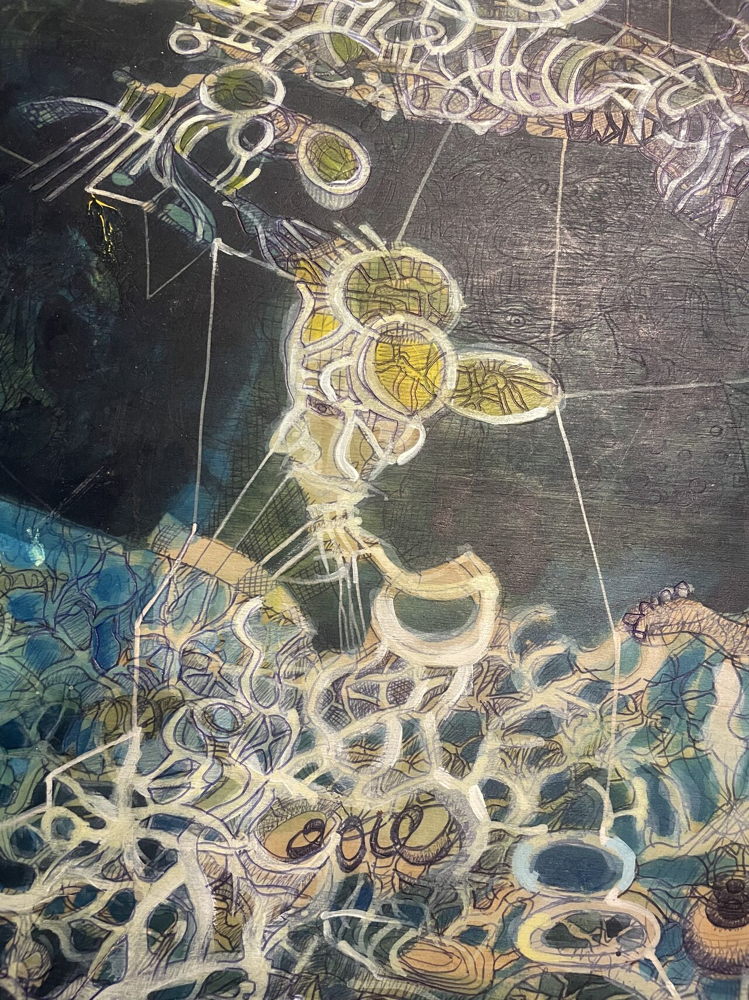

El Arte como Síntoma y Expresión
La pintura como canal para sentir y sublimar la angustia frente a la vida, reflejando el mundo interno. Obra en acrílico sobre madera: el rostro de Vice y su mundo.
"En mi trabajo como analista mi afán es también pintar... hacer de esta un síntoma, como la familia."